Abstract Call for RPYSOC2025 See our conference page for more info.
Useful links for health and care analysts and data scientists.
This project is a collection of information and knowledge related to analytical work on “Health Inequalities”, as performed in the NHS and the wider UK Health and Social…
In this book we’ve compiled a set of technical resources, links and write down our experiences of using open data science programs like R and Python within the NHS and…
Everything you need or want to know about NHS-R Community including: how to contribute and get involved, code styles, training preparation materials.
Blogs are submitted from NHS-R Community members.
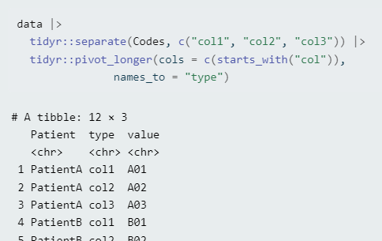
separate()
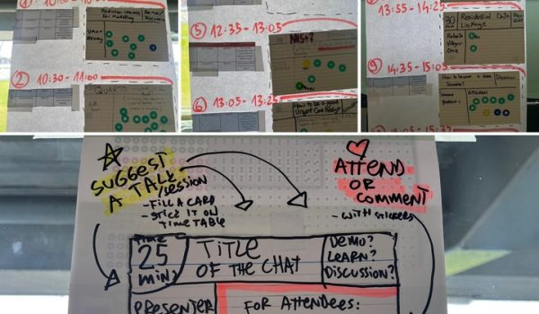
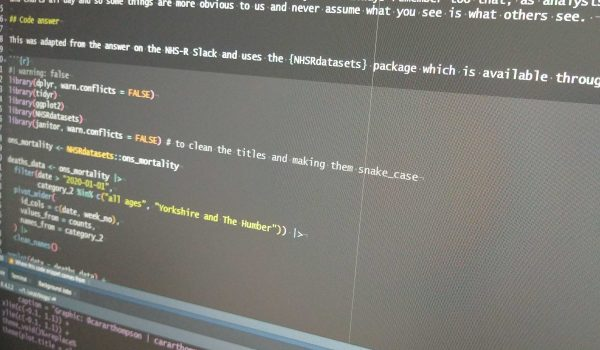
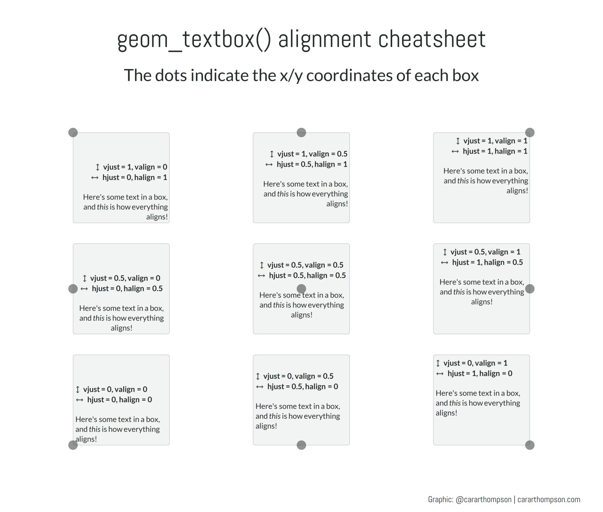
geom_textbox()
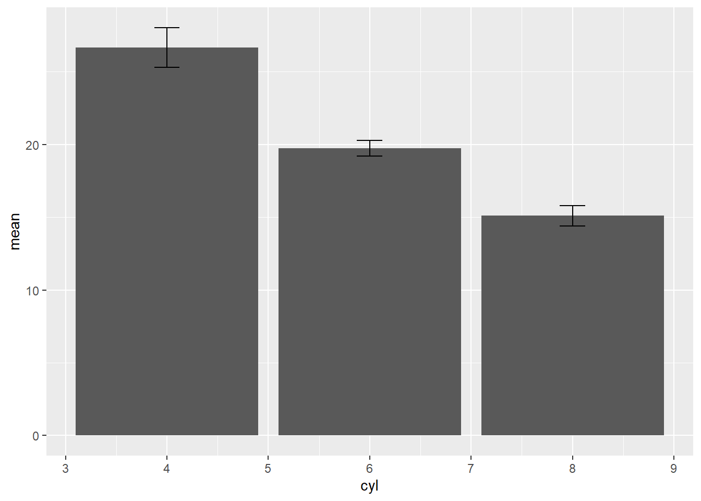
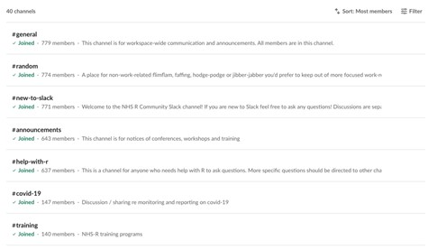
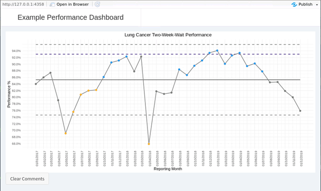
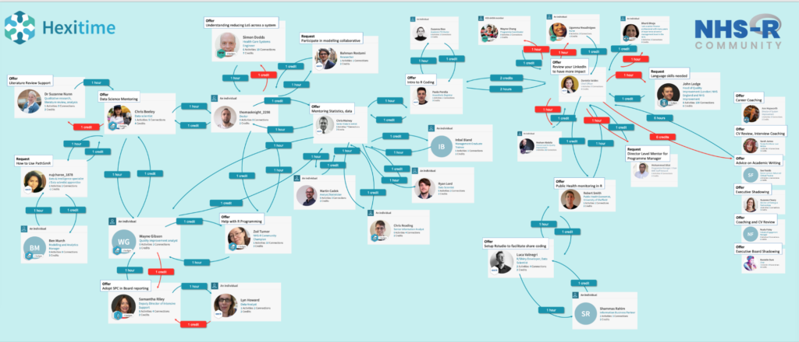
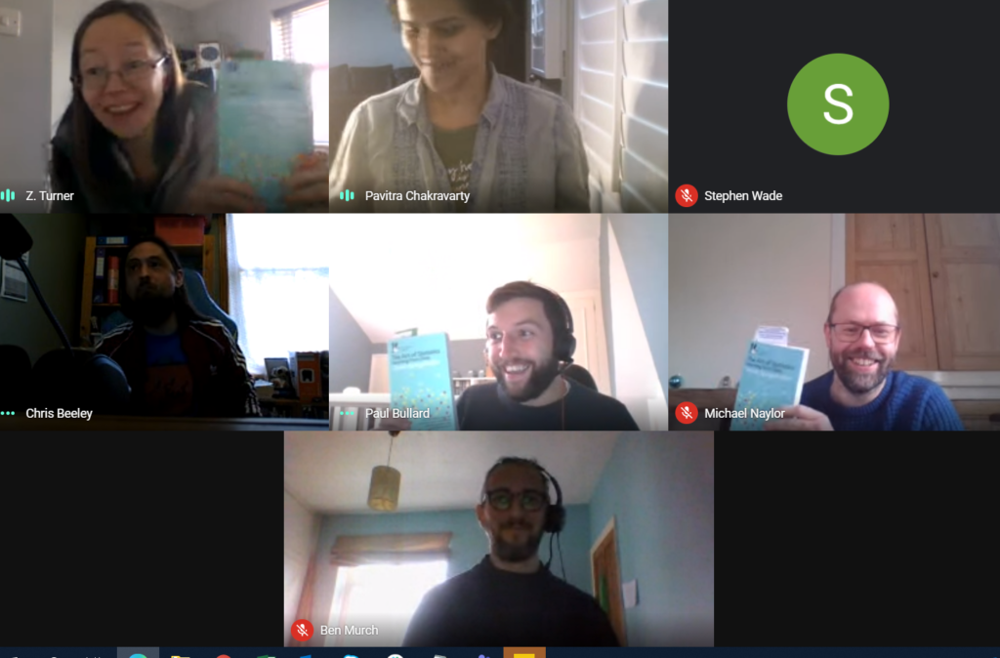
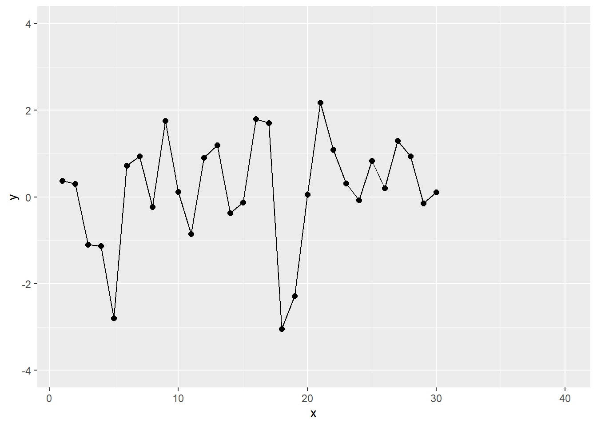
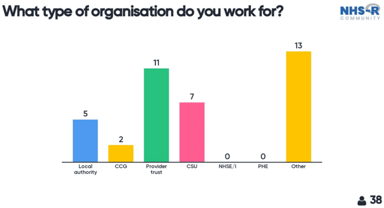
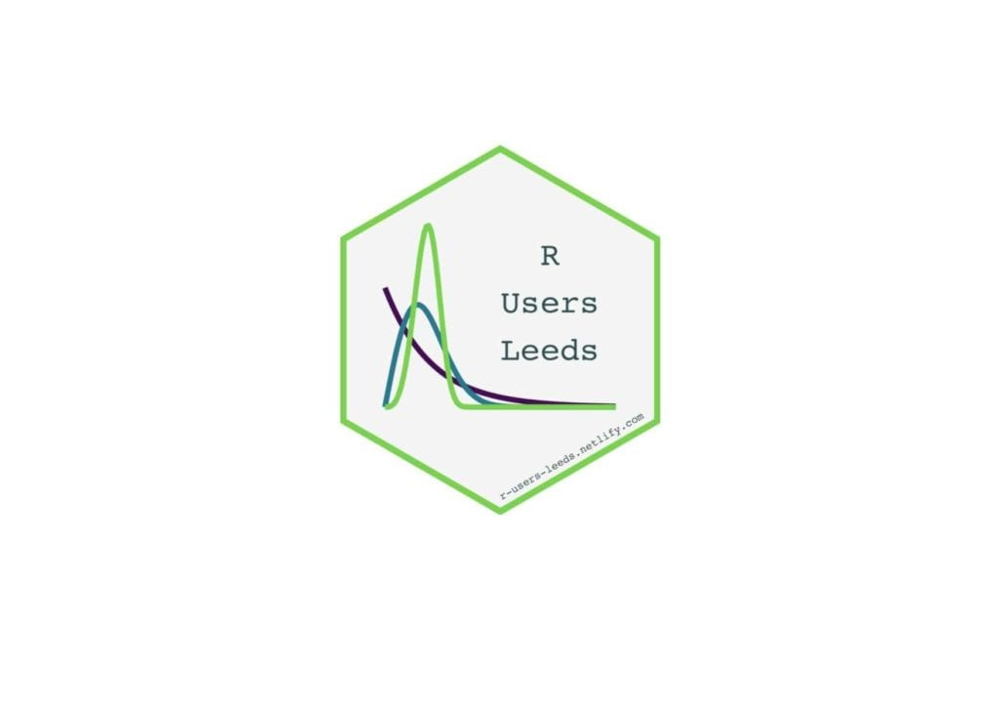
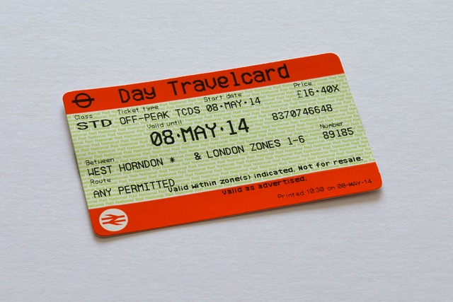
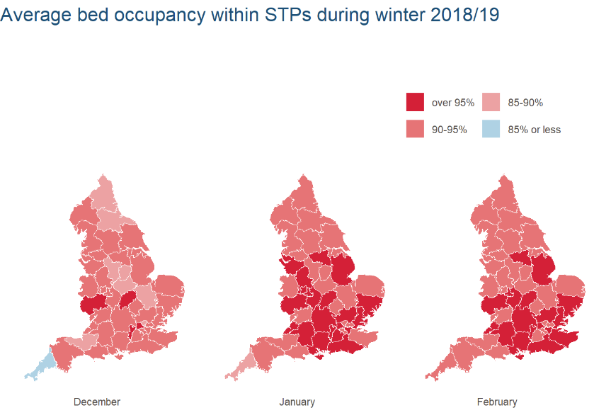
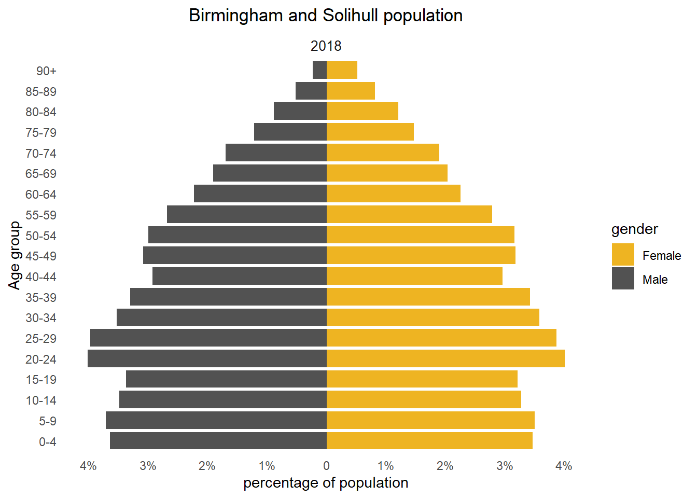
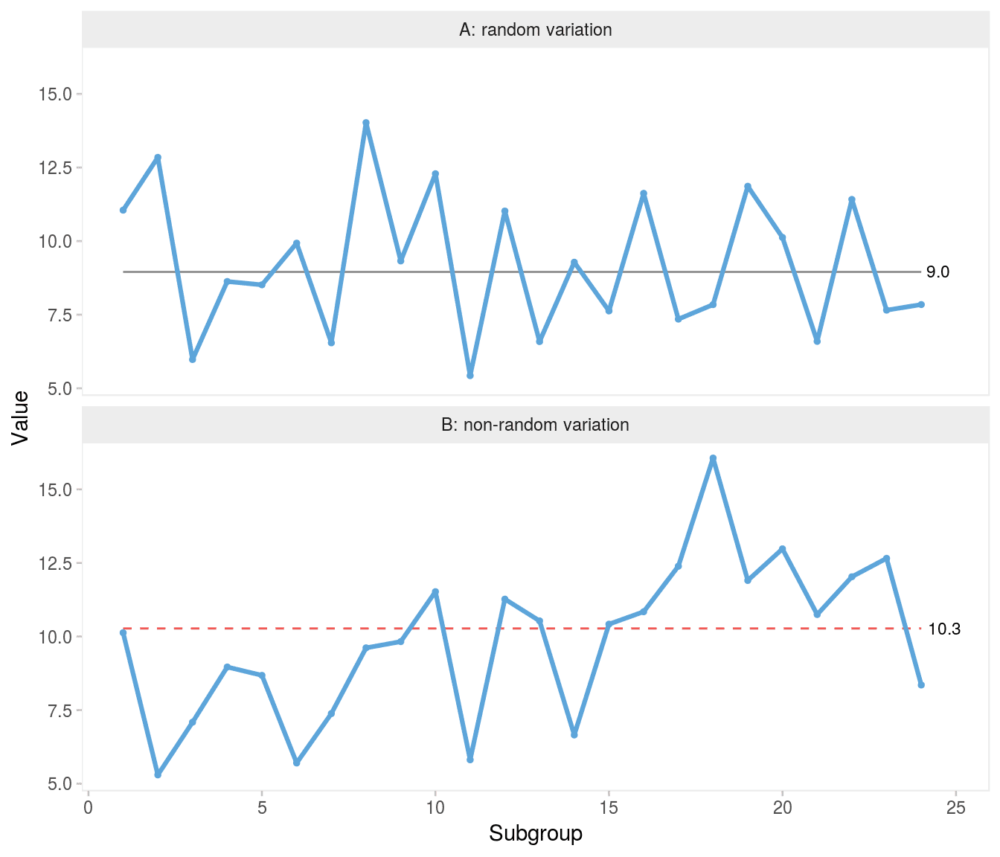
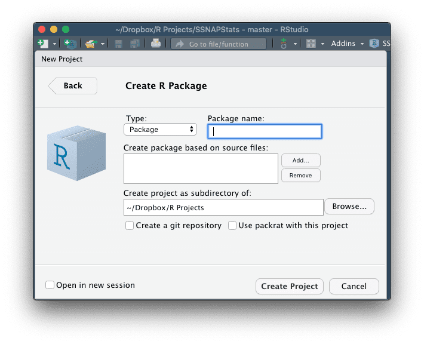
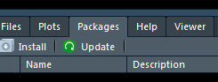
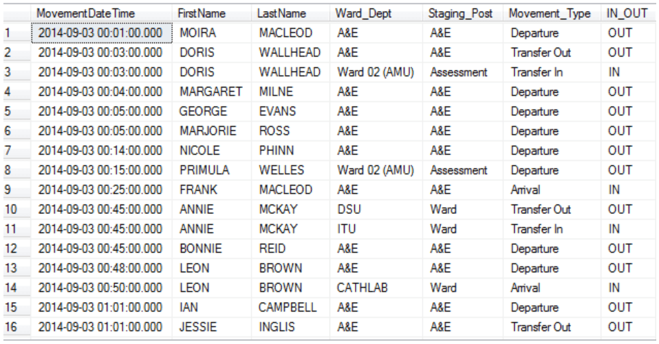
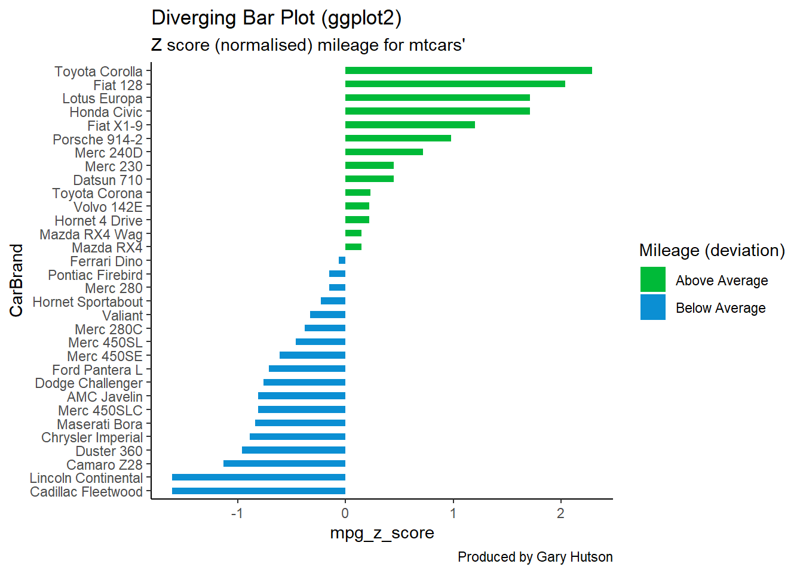
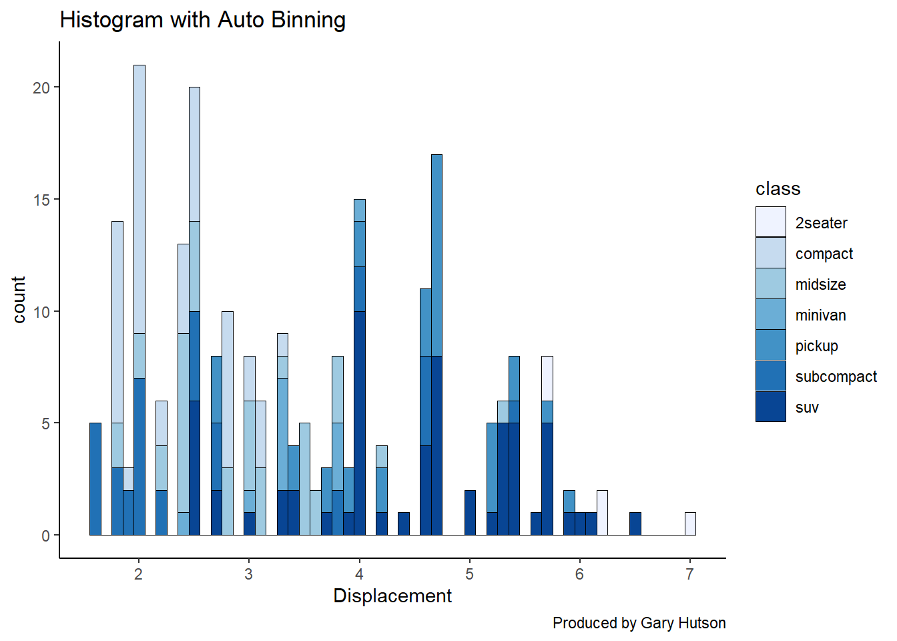
mtcars